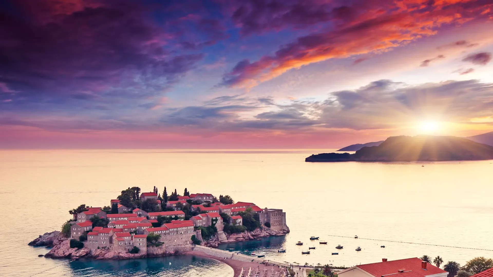
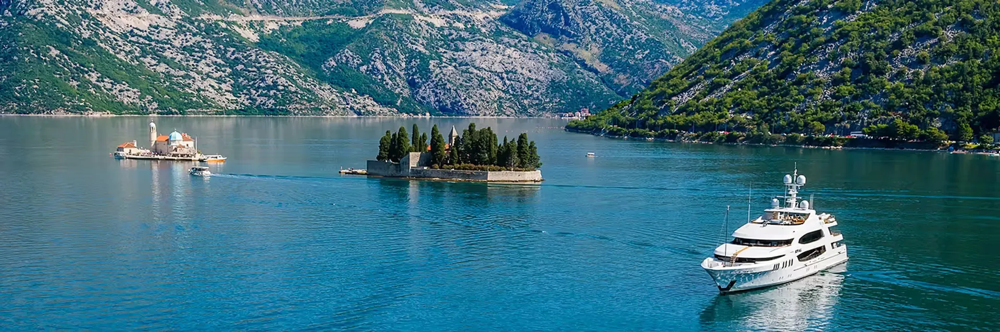
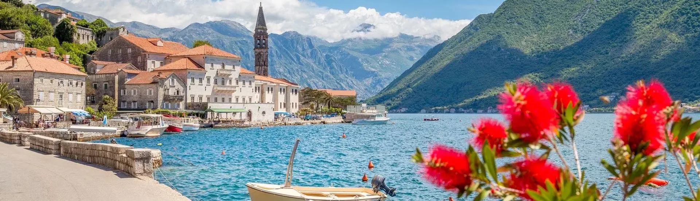

Yacht Charter Guide: The Best Things To Do In Montenegro
From the Bay of Kotor to Porto Montenegro, discover why this Adriatic gem has become a favourite among luxury yacht charter guests...

Discover the enchanting coastlines of Montenegro with our luxury yacht charters. Cruise through historic towns, crystal-clear waters, and beautiful bays.
EnquireOnce overlooked in favour of its more well-known neighbours, Montenegro is an idyllic destination that perfectly balances centuries-old architecture with modern-day luxury, including a variety of luxury hotels, bars, and restaurants. From sailing along its azure waters on a Montenegro yacht charter to exploring its forest-covered mountains, rocky cliffs, and sleepy villages nestled against sheer rock faces, this tiny Balkan country is a paradise for the discerning traveller. In the summer months, Porto Montenegro, with its shining yachts set against the rocky coast, is an especially beautiful sight. With all the glamour of a luxury yacht vacation, along with its rich history, stunning national parks, and excellent food, Montenegro is the ultimate destination for a luxurious travel experience.

Best time to visit: From May to October, Montenegro's reliable warm weather and sea temperatures of 25°C make it a pleasant yachting destination.
Key Cruising areas: Cruise the stunning rocky coastlines of the Bay of Kotor, known as the southernmost fjord, where emerald cliffs rise from the crystalline blue waters. Journey to the Luštica Peninsula, then hop aboard a tender to the Blue Grotto, where the water dazzles with its iridescent reflections off the sand.
Don't miss: Tucked into the vertical rock face of Montenegro, the Ostrog Monastery has been a cultural highlight since the 17th century, housing the remains of Saint Basil of Ostrog. An incredible feat of architecture, its construction is an awe-inspiring sight to behold.
Best spots for wining & dining: Surrounded by windmills, Catovica Mlini is an old mill with a unique charm. Located a short drive inland from the port city of Kotor, this fish restaurant is a must-visit for anyone seeking a leisurely lunch in stunning surroundings. With its excellent cuisine, you'll find yourself lingering for hours in this picturesque setting.

Best Local Dish: The tiny village of Njeguši, located within the Lovćen national park, is famous for its cheeses and smoked ham. Indulge in the local delicacies, best enjoyed with a glass of the region's dry red wine.
Local Culture: A passionate yachtsman, King Nikola's palace is now a part of the National Museum of Montenegro, showcasing fascinating artifacts of Montenegrin history and stunning royal gardens.
Best Beach: The curved pink beaches of Aman Sveti Stefan are a must see. Boasting lush, exotic botanical gardens and immaculate luxury resorts, this area is the most photographed spot in Montenegro and was once the summer residence of Queen Marija Karađorđević.
LADY MARCELLE Recommends: As you cruise through the impressive Bay of Kotor, you'll arrive in the charming, medieval town of Budva. Step ashore and explore the cobblestoned streets and centuries-old architecture, before heading to one of the cafés lining the waterfront to rub shoulders with the locals. After a leisurely afternoon, return to your yacht and relax as you sail away.
From the Bay of Kotor to Porto Montenegro, discover why this Adriatic gem has become a favourite among luxury yacht charter guests...
Montenegro is the perfect destination for a yacht charter for endless reasons. Accessed easily by yacht, the Adriatic...
Rocky cliffs, medieval walled towns, and crystal-clear anchorages make Montenegro one of the Mediterranean's most rewarding charter destinations...
Book your dates aboard LADY MARCELLE and explore Montenegro's Adriatic coast in style.
Book NowYes, LADY MARCELLE provides access to a wide fleet of luxury yachts available for charter throughout Montenegro, including motor yachts, sailing yachts, and catamarans cruising the Bay of Kotor, Budva Riviera, and beyond.
With experienced Charter Consultants and local knowledge of Porto Montenegro and the Adriatic coast, LADY MARCELLE can tailor yacht recommendations and itineraries for your Montenegrin charter.
From May to October offers the most reliable warm weather and pleasant sea temperatures, with July and August being the peak summer season.
Popular stops include Kotor, Perast, Budva, Porto Montenegro, Sveti Stefan, Tivat, and the Luštica Peninsula, as well as one-way itineraries linking Croatia and Montenegro.
Weekly rates vary by yacht size and season — from around €30,000 for smaller motor yachts to several hundred thousand euros for larger superyachts, typically plus expenses.
Base charter fees usually cover the yacht and crew. APA (expenses), fuel, food, drinks, marina fees, and taxes are typically additional.
Montenegro uses the Euro (€).